Multilevel Regression and Post-Stratification
Stratum Specific effect modification
Data Science @ Personio
and Open Source Contributor @ PyMC
2025-05-13
Preliminaries
Intro
- I’m a data scientist at Personio
- Bayesian statistician,
- Reformed philosopher and logician.
- Website: https://nathanielf.github.io/
Disclaimer
None of Personio’s data was used in this presentation

QR Website Code
Code or it didn’t Happen
The worked examples used here can be found here
The Pitch
Opt-out policies in SAAS customer surveys represent a risk for bias in survey derived summaries of customer opinion
Multilevel Regression with Post-stratification is a corrective technique for intellegently re-weighting the summaries to better reflect the true population distribution of opinion.
Agenda
- Regression as Strata specific Summarisation
- Hierarchical Regression and Probabilistic Programming
- Sampling and Probability Sampling
- Stratum Specific Modelling
- Stratum Specific Adjustment
- Conclusion
- When to Adjust and Why?
Regression Modelling
In which we illustrate how regression models automate strata specific effect modification
Regression: What are we even doing?
\[\hat{y_{i}} = \alpha + \beta_{1}X_{1} ... \beta_{n}X_{n}\]

Assume \(y = \hat{y_{i}} + \epsilon\) where \(E(\epsilon) = 0\)
\[ E[y | X = x] = \alpha + \beta_{1}X_{1} ... \beta_{n}X_{n}\]
\[ y \sim Normal(\hat{y_{i}}, \sigma) \]
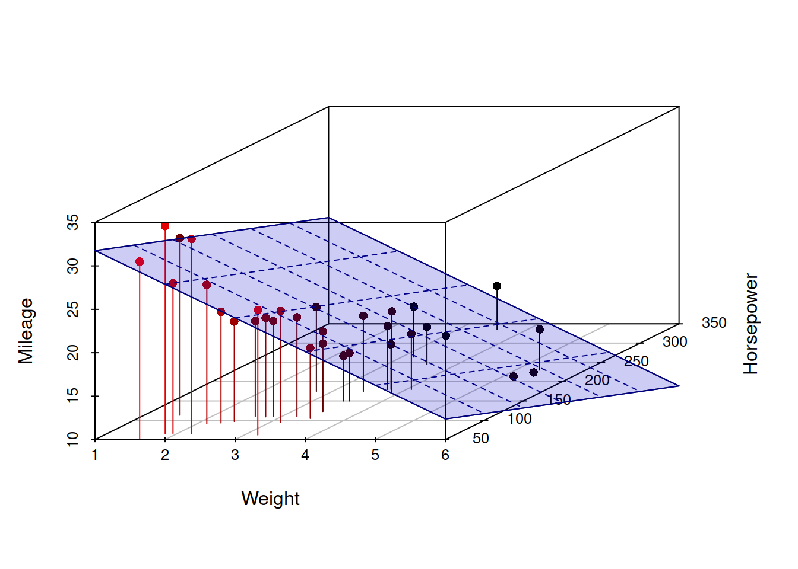
Regression: What are we even doing?
m0 = smf.ols('np.log(hwage) ~ job + educ', data=df).fit()
m1 = smf.ols('np.log(hwage) ~ job + educ + male ', data=df).fit()
pred = m0.predict(['software_engineer', 'college'])
pred1 = m1.predict(['software_engineer', 'college', 1])
diff = predc - pred1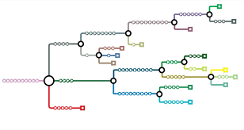
As we add more covariates we add more combinatorial branches which define the available strata across our population of interest.
A fitted regression model allows us to explore the conditional branching probabilities.
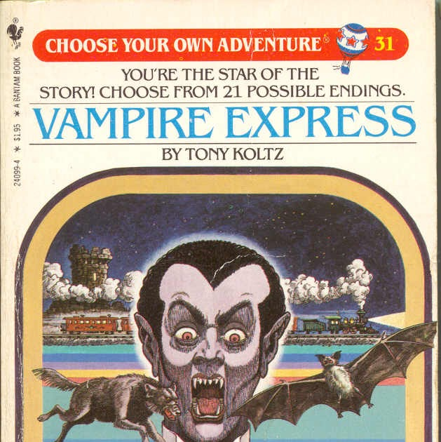
Regression as Weighting Adjustment
Regression automates the more manual re-weighting
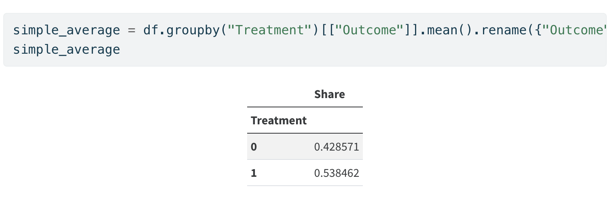Simple Unweighted Average
Regression as Weighting Adjustment
Regression automates the more manual re-weighting
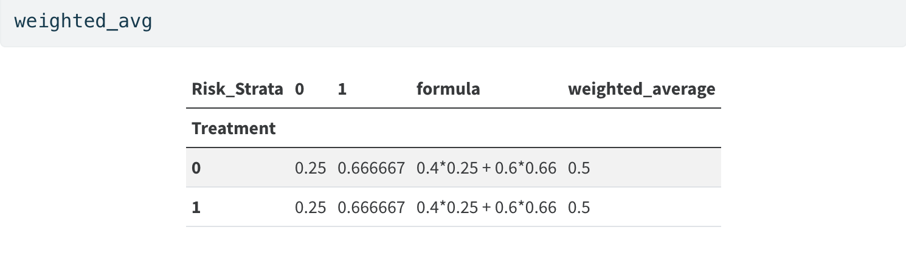Weighted Average
Regression as Effect Modification
reg = bmb.Model("Outcome ~ 1 + Treatment", df)
results = reg.fit()
reg_strata = bmb.Model("""Outcome ~ 1 + Treatment + Risk_Strata
+ Treatment_x_Risk_Strata""", df)
results_strata = reg_strata.fit()
bmb.interpret.plot_predictions(reg, results, conditional=["Treatment"])
bmb.interpret.plot_predictions(reg_strata, results_strata, conditional=["Treatment"])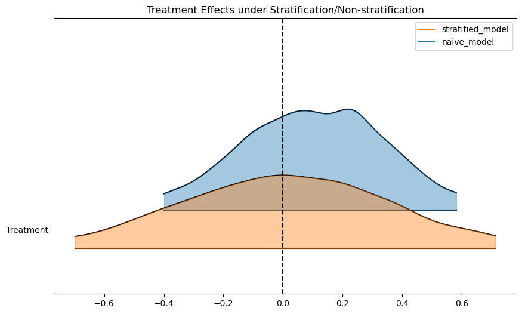
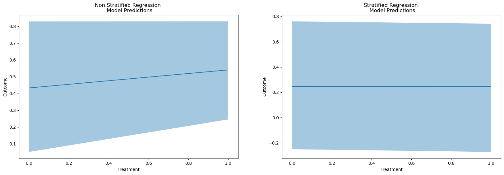
The Need for Re-Weighting
- Causal Inference
- Inverse Probability Weighting
- Pseudo-Population Imputation
- Treatment effect estimation
- Survey Sample Bias
- Non-response
- Opt-out Sampling contracts
- Incomplete coverage
- Multilevel Regression
- Post-stratification Adjustment
Hierarchical Regression and PPLs
Differences in Strata drawn at Random?
\[ y = \beta_{0} + (\beta_{1} + \color{red}\gamma_{1,g}\color{black})X_{1} + \beta_{2}X_{2}\]
where
\[\beta_{i} \sim Normal(0, \color{purple}\sigma_{i}\color{black})\]
and
\[\color{red}{\gamma_{1,g}}\color{black} \sim Normal(0, \color{purple}\sigma_{i}\color{black}) \text{ for } g \in G\]
\[\sigma_{i} \sim InverseGamma(?, ?)\]
Hierarchical Regression and PPLs
Vectorisation and Python Implementation
Hierarchical Regression and PPLs
Vectorisation and Python Implementation
| g | b_g | X0 | X1 | y | |
|---|---|---|---|---|---|
| 0 | A | -0.94 | -1.13 | -0.78 | -3.34 |
| 1 | B | 0.26 | -1.69 | -0.26 | -3.88 |
| 2 | C | 1.09 | -0.43 | -0.64 | -2.88 |
| 3 | D | 1.05 | -0.54 | 0.57 | 1.64 |
| 4 | E | 0.09 | -0.46 | -1.96 | -7.80 |
| 5 | A | -0.94 | 1.59 | 0.91 | 6.32 |
| 6 | B | 0.26 | -0.39 | 0.67 | 2.79 |
| 7 | C | 1.09 | 1.06 | -0.28 | 3.16 |
| 8 | D | 1.05 | -1.04 | 0.74 | 0.79 |
| 9 | E | 0.09 | -0.11 | 1.40 | 6.39 |
Sampling and Probability Sampling
In which we discuss the manner in which sample bias can corrupt the inferences drawn in even theoretically sound regression models.
The Data
We examine a comprehensive YouGov poll on whether employers should cover abortion in their coverage plans.
We select a biased subsample.
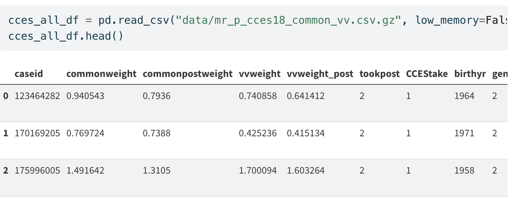State Level Data
Deliberate Bias
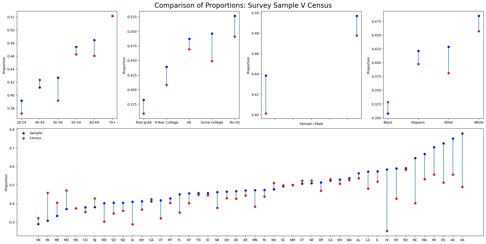Illustrated differences in vote share by demographics
Prep Data for Modelling
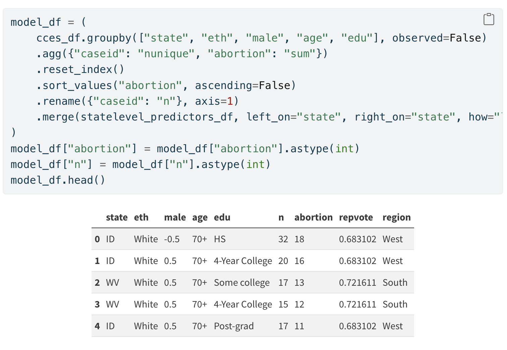Aggregate Across Strata
Modelling of Survey Outcomes
Bayesian Models incorporate different sources of knowledge
“In conventional sampling theory, the only scenario considered is essentially that of ‘drawing from an urn’, and the only probabilities that arise are those that presuppose the contents of the ‘urn’ or the ‘population’ already known, and seek to predict what ‘data’ we are likely to get as a result. …It was our use of probability theory as logic that has enabled us to do so easily what was impossible for those who thought of probability as a physical phenomenon associated with ‘randomness’. Quite the opposite; we have thought of probability distributions as carriers of information.” - Edwin Jaynes in Probability: The Logic of Science pg88 & p117
Exploratory Modelling
We fit a preliminary model to investigate the interactions across demographic splits. We specify a logit model using the binomial link.
formula = """ p(abortion, n) ~ C(state) + C(eth) + C(edu) + male + repvote"""
base_model = bmb.Model(formula, model_df, family="binomial")
result = base_model.fit(
random_seed=100,
target_accept=0.95,
idata_kwargs={"log_likelihood": True},
)
fig, ax = bmb.interpret.plot_comparisons(
model=base_model,
idata=result,
contrast={"eth": ["Black", "White"]},
conditional=["age", "edu"],
comparison_type="diff",
subplot_kwargs={"main": "age", "group": "edu"},
fig_kwargs={"figsize": (12, 5), "sharey": True},
legend=True,
)
ax[0].set_title("Comparison of Difference in Ethnicity \n within Age and Educational Strata");Plotting Implications
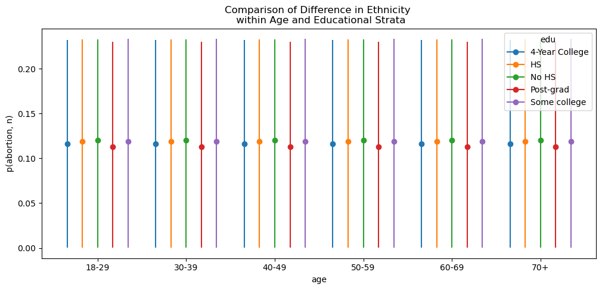Exploratory Interaction Effects
Plotting Implications
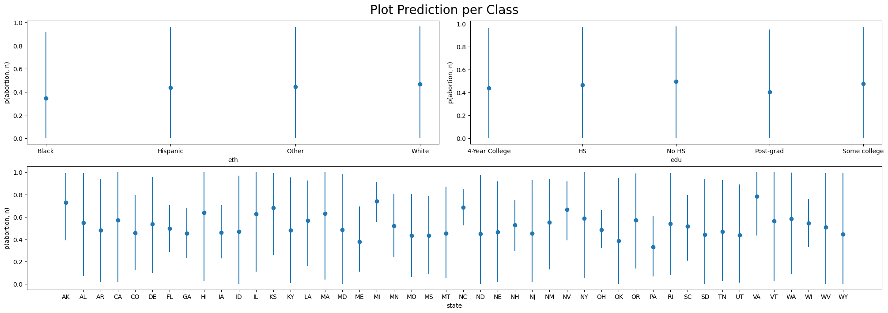Posterior Predictive By Class
Investigating Marginal Contrasts
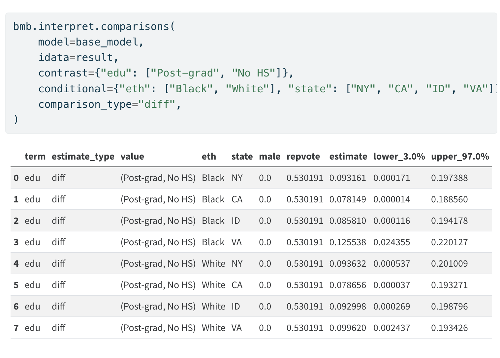Marginal Differences
Stratum Specific Modelling
In which we fit our full model to the biased data.
The Full Hierarchical Interaction Model
\[Pr(y_i = 1) = logit^{-1}\Bigg( \alpha_{\rm s[i]}^{\rm state} + \alpha_{\rm a[i]}^{\rm age} + \alpha_{\rm r[i]}^{\rm eth} + \alpha_{\rm e[i]}^{\rm edu} \\ + \beta^{\rm male} \cdot {\rm Male}_{\rm i} + \alpha_{\rm g[i], r[i]}^{\rm male.eth} + \alpha_{\rm e[i], a[i]}^{\rm edu.age} + \alpha_{\rm e[i], r[i]}^{\rm edu.eth} \Bigg)\]
Allowing for stratum specific intercept terms for each level of the demographic categories and their interaction effects.
The Model in Code
Fitting the model to the biased sample:
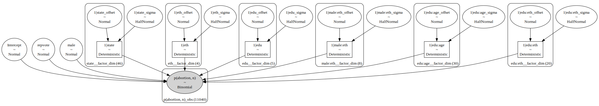Learning the Bias
The Model Derived Coefficients
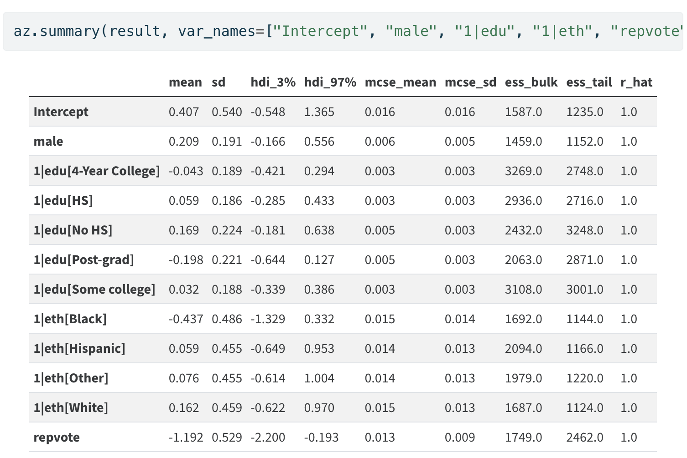
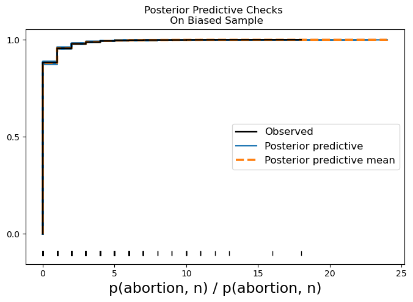
Stratum Specific Adjustment
In which we use the fitted model to predict rates of voting over the population and adjust the predicted values by the relative weights each strata occupies in the population.
Predicting Vote Share
Using the Biased Model
new_data = (new_data.merge(
new_data.groupby("state").agg({"n": "sum"})
.reset_index()
.rename({"n": "state_total"}, axis=1)
)
)
new_data["state_percent"] = new_data["n"] / new_data["state_total"]
new_data.head()Population by Strata
Adjusting the State Level Predictions
Reweighting Outcomes by Strata specific Share
estimates = []
## The base model posterior fitted on biased sample
abortion_posterior_base = az.extract(result)["p(abortion, n)_mean"]
## The posterior updated with national level figures
abortion_posterior_mrp = az.extract(result_adjust)["p(abortion, n)_mean"]
## Adjusting the predictions on state level
for s in new_data["state"].unique():
idx = new_data.index[new_data["state"] == s].tolist()
predicted_mrp = (
((abortion_posterior_mrp[idx].mean(dim="sample") *
new_data.iloc[idx]["state_percent"]))
.sum()
.item()
)
predicted_mrp_lb = (
(
(
abortion_posterior_mrp[idx].quantile(0.025, dim="sample")
* new_data.iloc[idx]["state_percent"]
)
)
.sum()
.item()
)
predicted_mrp_ub = (
(
(
abortion_posterior_mrp[idx].quantile(0.975, dim="sample")
* new_data.iloc[idx]["state_percent"]
)
)
.sum()
.item()
)
predicted = abortion_posterior_base[idx].mean().item()
base_lb = abortion_posterior_base[idx].quantile(0.025).item()
base_ub = abortion_posterior_base[idx].quantile(0.975).item()
estimates.append(
[s, predicted, base_lb, base_ub, predicted_mrp, predicted_mrp_ub, predicted_mrp_lb]
)
state_predicted = pd.DataFrame(
estimates,
columns=["state", "base_expected", "base_lb",
"base_ub", "mrp_adjusted", "mrp_ub", "mrp_lb"],
)
state_predicted = (
state_predicted.merge(cces_all_df.groupby("state")[["abortion"]].mean().reset_index())
.sort_values("mrp_adjusted")
.rename({"abortion": "census_share"}, axis=1)
)
state_predicted.head()Comparing Adjusted and Raw Predictions
Derived state level predictions using the biased sample and the corrected values.
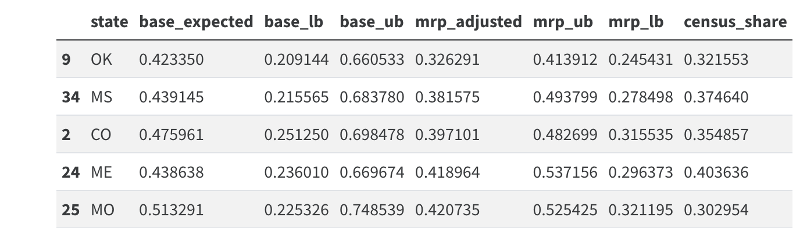Adjusted Predictions
Comparing Adjusted and Raw Predictions

Comparing Predictions to Adjusted Predictions
Conclusion
The Need for Reweighting
“The IID condition is a mathematical specification of what Hume called the uniformity of nature. To say that nature is uniform means that whatever circumstances holds for the observed, the same circumstances will continue to hold for the unobserved. This is what Hume required for the possibility of inductive reasoning”
- Survey Bias Breaks the IID condition
- Inference falls apart with non-representative samples
- Prediction suffers from wild skew
- Knowledge about demographic representation informs priors
- Historic rates can be used to improve sample representation
- Model recovers inferential validity. Prediction improves.
Post-Stratification Weighting